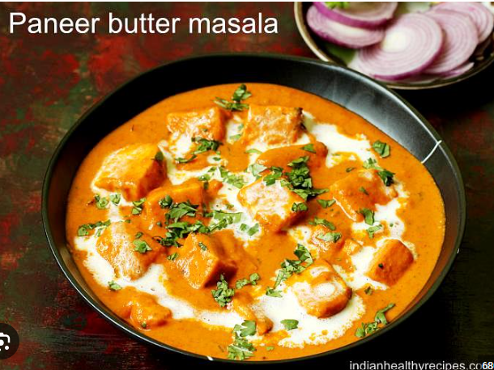

How to Make Paneer Butter Masala
You will have to do some light prep work before you begin making this delicious recipe.
It starts with soaking your cashews, making tomato puree and blending soaked cashews.
Preparation
Soak 18 to 20 cashews in ⅓ cup hot water for 20 to 30 minutes
While the cashews are soaking, you can prep the other ingredients.
It’s time for chopping tomatoes, chopping and preparing the ginger-garlic paste,
and slicing paneer into cubes.
make the ginger garlic paste, crush a 1 inch piece of peeled ginger with 3 to 4 small to
medium-sized garlic cloves in a mortar & pestle. Continue crushing until it is a semi-fine or fine paste.
Keep aside.
Note: Don’t add any water while crushing ginger & garlic.
After 20 to 30 minutes, drain the water and add the soaked cashews to
a blender or mixer-grinder.
Also, add 2 to 3 tablespoons fresh water (or as much as is required to blend to a fine paste).
Blend to a smooth paste without any tiny bits or chunks of cashews.
Remove the cashew paste from the blender and set it aside.
In the same blender, add 2 cups of diced or roughly chopped tomatoes.
Note: There’s no need to blanch the tomatoes or
to wash the blender pitcher before blending.
chopped tomatoes added in the same blender jar
Blend to a smooth tomato puree. Set aside.
Note: Don’t add any water while blending the tomatoes.
tomatoes blended to a smooth purée to make paneer butter masala gravy
Heat a thick bottomed pan or a heavy pan. Keep the heat to a low or medium-low.
Add 2 tablespoons (or 3 to 4 tablespoons for a richer version)
butter in a pan. Either salted or unsalted butter can be used.
Tip: Alternatively, you can add 1 tablespoon oil + 1-2 tablespoons of butter to the pan.
Adding oil prevents the butter from browning too quickly.
Keep the the heat to a low. Add 1 medium-sized tej patta and fry for 2 to 3 seconds,
or until fragrant.
Add the prepared crushed ginger-garlic or 1 teaspoon ready-made ginger-garlic paste.
.
Sauté until the raw aroma of the ginger-garlic disappears, about 10 to 12 seconds.
Pour in the prepared tomato purée.
Note: Be careful while adding the purée as it may splutter.
Next add kashmiri red chili powder and stir again.
Continue to sauté till the oil starts to leave the sides of the tomato paste.
The tomato paste will thicken considerably and will start
coming together as one whole lump.
Then add cashew paste and stir well.
Sauté the cashew paste for a few minutes till the oil begins to leave the sides of the masala paste.
The cashew paste will begin to cook fast.
Approx 3 to 4 minutes on a low heat. So keep stirring non-stop.
Making Paneer Butter Masala
Add water and mix very well. Simmer on a low to medium-low heat.
The curry will come to a boil.
After 2 to 3 minutes of boiling, add ginger julienne.
Reserve a few for garnishing. The curry will also begin to thicken.
Add julienned ginger and green chillies, salt and suga…